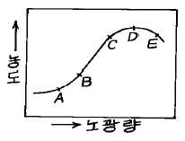
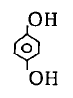

사진기능사 (2001-07-22 기출문제)
1과목: 사진일반
1. 사회 현실이나 대중의 일상 생활을 충실히 기록하고 그것을 널리 세상에 알리는 목적으로 촬영한 사진은?
- 자연주의 사진
- 창작 사진
- 광고 사진
- 다큐멘터리 사진
(정답률: 알수없음)

2. 자외선, 청색과 적색의 일부를 흡수하므로 옥외 정색 묘사에 좋으며 정물, 인물 촬영에 가장 적합한 필터는? (문제 오류로 정답이 정확하지 않습니다. 정답지를 찾지못하여 임의 정답 1번으로 설정하였습니다. 정답을 아시는 분께서는 오류 신고를 통하여 정답 입력 부탁 드립니다.)
- YG
- UV
- B
- R
(정답률: 84%)
3. 어떤 색을 보고 흥분이 되기도 하고 반대로 침정이 되기도 한다. 색의 속성 중 이 현상과 가장 관계가 깊은 것은?
- 명도
- 색상
- 채도
- 잔상효과
(정답률: 알수없음)
4. 색각이론(色覺理論) 중에서 영 헬름홀쯔(Young Helmholtz)의 3원색설에 대한 설명 중 옳은 것은? (문제 오류로 정답이 정확하지 않습니다. 정답지를 찾지못하여 임의 정답 1번으로 설정하였습니다. 정답을 아시는 분께서는 오류 신고를 통하여 정답 입력 부탁 드립니다.)
- 빛이 들어오면 분해, 합성작용이 동시에 일어나고 비율에 의하여 여러가지 색이 지각된다.
- 망막속에 적, 녹, 청자의 색광을 감광하는 수용체인 신경조직이 들어 있다.
- 망막속에 3가지의 광화학 물질인 흑백물질, 적녹물질, 황청물질이 존재한다.
- 추상체, 간상체의 활동이 전부 없으면 이것을 전색맹(全色盲)이라 한다.
(정답률: 알수없음)
5. 색지각(色知覺, color perception)에 있어서 빛은 필수 조건이다. 빛에 대한 설명 중 올바른 것은?
- 뉴톤(Newton)은 빛의 파동설(波動說)을 주장 하였다.
- 보통 빛이라고 하는 것은 380㎚ - 780㎚의 가시광선(可視光線)을 말한다.
- 빛의 파장(波長)이 짧을수록 굴절률(屈折率)이 적다.
- 호이겐스(Huygens)는 빛의 광입자설(光粒子說)을 주장하였다.
(정답률: 64%)
6. 감색법으로 Y와 M을 합쳤을 때 나타나는 색은? (단, Y:Yellow, M:Magenta) (문제 오류로 정답이 정확하지 않습니다. 정답지를 찾지못하여 임의 정답 1번으로 설정하였습니다. 정답을 아시는 분께서는 오류 신고를 통하여 정답 입력 부탁 드립니다.)
- 적색
- 녹색
- 청색
- 흑색
(정답률: 알수없음)
7. 중량감의 효과가 가장 강한 느낌의 속성은?
- 색상
- 채도
- 명도
- 순도
(정답률: 알수없음)
8. 컬러 사진에서 가장 변색이 잘 되는 색감은? (문제 오류로 정답이 정확하지 않습니다. 정답지를 찾지못하여 임의 정답 1번으로 설정하였습니다. 정답을 아시는 분께서는 오류 신고를 통하여 정답 입력 부탁 드립니다.)
- Yellow
- Magenta
- Cyan
- Red
(정답률: 알수없음)
9. 카메라를 이용하지 않고 투명체, 반투명체, 불투명체의 그늘을 인화지위에 만들어 노광 현상한 사진은?
- 연조 인화법(Soft focusing)
- 몽타즈(Montage)
- 포토그램(Photogram)
- 디포메이션(Deformation)
(정답률: 알수없음)
10. 콜로디온 습판법의 특징은?
- 다게레오 타입이나 칼로 타입보다 조작이 간단하나 인화시간이 길다.
- 노광시간이 매우 길고 현상과정이 매우 간단하다.
- 한 장의 네거티브로 여러 장의 포지티브를 얻을 수 있다.
- 인화한 프린트의 상이 흐리다.
(정답률: 알수없음)
11. 상반칙불궤의 법칙과 관련된 설명으로 옳은 것은? (문제 오류로 정답이 정확하지 않습니다. 정답지를 찾지못하여 임의 정답 1번으로 설정하였습니다. 정답을 아시는 분께서는 오류 신고를 통하여 정답 입력 부탁 드립니다.)
- 컬러필름의 장시간 노출(1초 이상)에 대한 색의 변화
- 컬러필름보다 흑백필름에서 더욱 민감하게 반응하는 노출의 오차
- 하루동안의 색채변화를 시간대별로 나누어 제시한 색채 변화표
- 단시간 노출(1/1000초 이상)은 컬러에 영향을 주지 않는다.
(정답률: 알수없음)
12. 2개의 빛의 파장이 한 점에서 동시에 만났을 때 그 점에서의 진동이 각각 파의 진동의 합으로 나타나는 현상을 무엇이라 하는가? (문제 오류로 정답이 정확하지 않습니다. 정답지를 찾지못하여 임의 정답 1번으로 설정하였습니다. 정답을 아시는 분께서는 오류 신고를 통하여 정답 입력 부탁 드립니다.)
- 회절
- 간섭
- 편광
- 반사
(정답률: 알수없음)
13. 빛의 성질에 대한 설명 중 잘못된 것은? (문제 오류로 정답이 정확하지 않습니다. 정답지를 찾지못하여 임의 정답 1번으로 설정하였습니다. 정답을 아시는 분께서는 오류 신고를 통하여 정답 입력 부탁 드립니다.)
- 반사면이 고르면 반사광은 고르게 세분되고 이 경우 반사각과 입사각은 같다.
- 반사면이 거친 경우 반사광은 고르게 세분되지 못하여 여러 방향으로 흩어진다.
- 매개물이 투명체인 경우 빛의 일부는 반사하고 일부는 흡수되며 일부는 굴절한다.
- 조명의 밝기는 거리의 제곱에 비례한다.
(정답률: 알수없음)
14. 일반적으로 컬러필름을 사용하여 인물사진을 촬영하고자 할 경우 밝은 부분과 그늘진 부분의 적당한 조명 비율은? (문제 오류로 정답이 정확하지 않습니다. 정답지를 찾지못하여 임의 정답 1번으로 설정하였습니다. 정답을 아시는 분께서는 오류 신고를 통하여 정답 입력 부탁 드립니다.)
- 1:2
- 6:1
- 1:1
- 3:1
(정답률: 알수없음)
15. 필름의 감도를 나타내는 것이 아닌 것은?
- ASA
- GN
- DIN
- ISO
(정답률: 알수없음)
16. 다음 특성곡선에서 솔라리제이션(solarization)부분은? (문제 오류로 정답이 정확하지 않습니다. 정답지를 찾지못하여 임의 정답 1번으로 설정하였습니다. 정답을 아시는 분께서는 오류 신고를 통하여 정답 입력 부탁 드립니다.)

- AB
- BC
- CD
- DE
(정답률: 알수없음)
17. 은염 고유의 감광역을 기준으로 하여 청색광까지 감광하는 film은?
- Orthochromatic film
- Panchromatic film
- X-ray film
- Regular film
(정답률: 알수없음)
18. 다음과 같은 구조를 가진 현상 주약의 이름은? (문제 오류로 정답이 정확하지 않습니다. 정답지를 찾지못하여 임의 정답 1번으로 설정하였습니다. 정답을 아시는 분께서는 오류 신고를 통하여 정답 입력 부탁 드립니다.)

- 메톨
- 하이드로퀴논
- 페니돈
- 하이포
(정답률: 알수없음)
19. 현상액에서 포그(fog)발생을 억제시켜 주는 약품은?
- 하이드록실아민
- 벤조트리아졸
- 크롬명반
- 포르말린
(정답률: 70%)
20. 현상촉진제로 사용되지 않는 것은? (문제 오류로 정답이 정확하지 않습니다. 정답지를 찾지못하여 임의 정답 1번으로 설정하였습니다. 정답을 아시는 분께서는 오류 신고를 통하여 정답 입력 부탁 드립니다.)
- Na2CO3·H2O
- NaHSO3
- NaBO2·4H2O
- Na2HPO4·12H2O
(정답률: 알수없음)
2과목: 사진재료 및 현상
21. 정착이란 현상 후 필름에 남아있는 할로겐화은을 용해시켜 가용성 착염으로 처리하는 과정인데 이 때 사용되는 주된 약품은?
- 하이드로퀴논
- 티오황산나트륨
- 시안화나트륨
- 탄산나트륨
(정답률: 알수없음)
22. 컬러 현상처리시 유의사항으로 옳지 않은 것은? (문제 오류로 정답이 정확하지 않습니다. 정답지를 찾지못하여 임의 정답 1번으로 설정하였습니다. 정답을 아시는 분께서는 오류 신고를 통하여 정답 입력 부탁 드립니다.)
- 제조회사의 지시에 따라 약품을 혼합한다.
- 약품을 보관할 때는 뚜껑을 닫아 놓는 것이 좋다.
- 약품은 너무 차갑게 보관하지 않는 것이 좋다.
- 안정제를 거친 후 반드시 수세를 하여 건조시킨다.
(정답률: 알수없음)
23. 현상액 중 아황산나트륨(Sodium Sulfite)의 주된 역할은? (문제 오류로 정답이 정확하지 않습니다. 정답지를 찾지못하여 임의 정답 1번으로 설정하였습니다. 정답을 아시는 분께서는 오류 신고를 통하여 정답 입력 부탁 드립니다.)
- 산화방지
- 급속수세
- 현상촉진
- 현상정지
(정답률: 알수없음)
24. 현상에 관한 설명 중 맞지 않은 것은? (문제 오류로 정답이 정확하지 않습니다. 정답지를 찾지못하여 임의 정답 1번으로 설정하였습니다. 정답을 아시는 분께서는 오류 신고를 통하여 정답 입력 부탁 드립니다.)
- 현상시간이 연장되면 될수록 흑화농도의 증가율은 무한대로 비례하여 증가되어 간다.
- 현상농도는 현상액의 조성 및 농도에 따라 달라진다.
- 감광된 감광재료는 현상액속에서 초기에는 금속은을 석출하지 않을 때가 있다.
- 현상이란 감광된 감광재료에 생긴 잠상을 화학적 방법으로 가시화하는 것이다.
(정답률: 82%)
25. 포토플로 200(Photo-Flo 200)에 관한 설명 중 올바른 것은?
- 필름을 수세하기 직전에 사용하는 수적방지제이다.
- 물 1ℓ에 포토플로 200ml를 넣으면 된다.
- 지정량보다 함량이 높으면 그 효과는 더욱 좋아지므로 많이 사용할수록 좋다.
- 물얼룩을 방지하고 건조시간도 앞당겨 준다.
(정답률: 10%)
26. 잠상(latent image)을 눈에 보이는 화상으로 처리하는 과정은? (문제 오류로 정답이 정확하지 않습니다. 정답지를 찾지못하여 임의 정답 1번으로 설정하였습니다. 정답을 아시는 분께서는 오류 신고를 통하여 정답 입력 부탁 드립니다.)
- 현상
- 정착
- 수세
- 정지
(정답률: 90%)
27. 다음 그림은 감광유제의 증감영역을 표시한 것이다. A와 B의 증감이 바르게 연결된 것은? (문제 오류로 정답이 정확하지 않습니다. 정답지를 찾지못하여 임의 정답 1번으로 설정하였습니다. 정답을 아시는 분께서는 오류 신고를 통하여 정답 입력 부탁 드립니다.)
- A-화학증감, B-분광증감
- A-분광증감, B-화학증감
- A-환원증감, B-화학증감
- A-분광증감, B-환원증감
(정답률: 알수없음)
28. 다음 중 RC 인화지의 장점이 아닌 것은?
- 수세시간의 단축
- 처리액의 피로감소
- 현상처리 시간의 단축
- 사진의 수명연장
(정답률: 알수없음)
29. 흑백 다계조 인화지를 컬러 확대기를 이용하여 인화하고자 할 때 콘트라스트 조절을 위하여 컬러 확대기에서 사용하는 필터는? (문제 오류로 정답이 정확하지 않습니다. 정답지를 찾지못하여 임의 정답 1번으로 설정하였습니다. 정답을 아시는 분께서는 오류 신고를 통하여 정답 입력 부탁 드립니다.)
- Y,M
- M,C
- Y,C
- Y,M,C
(정답률: 알수없음)
30. 인화과정 중 너무 어둡게 인화된 부분을 잠시 가려서 밝게 해주는 방법은?
- 버닝
- 패닝
- 교반
- 다징
(정답률: 알수없음)
31. 이안반사식 카메라의 경우 근접촬영시 파인더의 위치와 촬영렌즈 위치가 일치하지 않아 일어나는 현상은? (문제 오류로 정답이 정확하지 않습니다. 정답지를 찾지못하여 임의 정답 1번으로 설정하였습니다. 정답을 아시는 분께서는 오류 신고를 통하여 정답 입력 부탁 드립니다.)
- 시차(視差)
- 코마수차
- 구면수차
- 화상왜곡
(정답률: 알수없음)
32. 일반적으로 근접 촬영시 시차교정이 필요없는 카메라는?
- 앵글파인더를 부착한 파노라마 카메라
- 일안 반사식 카메라
- 이안 반사식 카메라
- 거리계 연동식 카메라
(정답률: 알수없음)
33. 35mm 필름을 사용하는 카메라의 라이카판 화면규격은? (문제 오류로 정답이 정확하지 않습니다. 정답지를 찾지못하여 임의 정답 1번으로 설정하였습니다. 정답을 아시는 분께서는 오류 신고를 통하여 정답 입력 부탁 드립니다.)
- 35mm × 35mm
- 24mm × 35mm
- 24mm × 36mm
- 35mm × 36mm
(정답률: 알수없음)
34. 조리개의 수치가 f/1.4, f/2, f/2.8, f/4, f/5.6, f/8, f/11, f/16, f/22 .... 와 같이 되어 있다. f/4 는 f/5.6 보다 몇배가 밝은가? (문제 오류로 정답이 정확하지 않습니다. 정답지를 찾지못하여 임의 정답 1번으로 설정하였습니다. 정답을 아시는 분께서는 오류 신고를 통하여 정답 입력 부탁 드립니다.)
- 0.5배
- 2배
- 3배
- 4배
(정답률: 알수없음)
35. 중형카메라에 사용되는 표준렌즈의 초점거리는 일반적으로 몇 mm 인가? (문제 오류로 정답이 정확하지 않습니다. 정답지를 찾지못하여 임의 정답 1번으로 설정하였습니다. 정답을 아시는 분께서는 오류 신고를 통하여 정답 입력 부탁 드립니다.)
- 40-45 mm
- 50-55 mm
- 60-65 mm
- 75-80 mm
(정답률: 50%)
36. 초점거리를 가변적으로 움직일 수 있도록 설계된 렌즈는? (문제 오류로 정답이 정확하지 않습니다. 정답지를 찾지못하여 임의 정답 1번으로 설정하였습니다. 정답을 아시는 분께서는 오류 신고를 통하여 정답 입력 부탁 드립니다.)
- 컨버전렌즈
- 줌렌즈
- 어안렌즈
- 망원렌즈
(정답률: 알수없음)
37. 어떤 빛이 필터를 통과할 때 필터와 동일한 색상의 색은 어떻게 되는가?
- 흡수된다.
- 투과된다.
- 반사된다.
- 변화가 없다.
(정답률: 알수없음)
38. 고급 일안반사식카메라에 부착되어 롤필름을 자동적으로 진행시켜서 빠른 속도로 연속사진을 찍을 수 있도록 하는 기구는? (문제 오류로 정답이 정확하지 않습니다. 정답지를 찾지못하여 임의 정답 1번으로 설정하였습니다. 정답을 아시는 분께서는 오류 신고를 통하여 정답 입력 부탁 드립니다.)
- 모터드라이버
- 렌즈후드
- 렌즈어태치먼트
- 센트포커스
(정답률: 알수없음)
39. 확대기를 사용해서 확대인화를 할 때 일반적으로 사용하는 노출시간의 범위는? (문제 오류로 정답이 정확하지 않습니다. 정답지를 찾지못하여 임의 정답 1번으로 설정하였습니다. 정답을 아시는 분께서는 오류 신고를 통하여 정답 입력 부탁 드립니다.)
- 1초 내외
- 10초 내외
- 45초 내외
- 60초 내외
(정답률: 알수없음)
40. 링(Ring) 스트로보 촬영에 가장 알맞는 것은? (문제 오류로 정답이 정확하지 않습니다. 정답지를 찾지못하여 임의 정답 1번으로 설정하였습니다. 정답을 아시는 분께서는 오류 신고를 통하여 정답 입력 부탁 드립니다.)
- 근접촬영시
- 인물촬영시
- 대형피사체 촬영시
- 원거리 촬영시
(정답률: 알수없음)
3과목: 사진기계 및 촬영
41. 유니버설 파인더의 주된 사용 목적은?
- 거리측정
- 노출측정
- 렌즈교환
- 반사식 파인더의 보조
(정답률: 알수없음)
42. 촬영 날짜를 사진에 기입하는 역할을 하는 카메라 액세서리는? (문제 오류로 정답이 정확하지 않습니다. 정답지를 찾지못하여 임의 정답 1번으로 설정하였습니다. 정답을 아시는 분께서는 오류 신고를 통하여 정답 입력 부탁 드립니다.)
- 데이터 백
- 릴리즈
- 컨버트
- 후드
(정답률: 알수없음)
43. 비교적 콘트라스트가 강하고 날카로우며, 정밀묘사를 할 수 있고 또 색이 일정하게 유지되므로 컬러사진에서 정밀한 색의 재현이 가능한 광선은? (문제 오류로 정답이 정확하지 않습니다. 정답지를 찾지못하여 임의 정답 1번으로 설정하였습니다. 정답을 아시는 분께서는 오류 신고를 통하여 정답 입력 부탁 드립니다.)
- 직사광선
- 산광
- 반사광
- 여과광
(정답률: 알수없음)
44. 카메라에서 조리개의 역할이 아닌 것은? (문제 오류로 정답이 정확하지 않습니다. 정답지를 찾지못하여 임의 정답 1번으로 설정하였습니다. 정답을 아시는 분께서는 오류 신고를 통하여 정답 입력 부탁 드립니다.)
- 광량조절
- 초점이 맞는 범위 조절
- 상의 크기 조절
- 수차 교정
(정답률: 59%)
45. 대형카메라의 이동(Movements)에 있어서 렌즈의 수직방향에 대하여 각도 변경을 하는 것으로 카메라 앞판과 뒷판을 수평축 위에서 앞으로 기울어지게 하는 것은?
- 라이즈·폴(Rise·Fall)
- 슬라이드·시프트(Slide·Shift)
- 틸트(Tilt)
- 스윙(Swing)
(정답률: 알수없음)
46. 안개 낀 원경의 촬영은 단파장 광선이 산란하여 잘 보이지 않게 된다. 이와 같은 현상을 무엇이라 하는가? (문제 오류로 정답이 정확하지 않습니다. 정답지를 찾지못하여 임의 정답 1번으로 설정하였습니다. 정답을 아시는 분께서는 오류 신고를 통하여 정답 입력 부탁 드립니다.)
- 헤이즈
- 포그
- 할레이션
- 이레디에이션
(정답률: 알수없음)
47. 노출 결정시에 고려하지 않아도 될 사항은? (문제 오류로 정답이 정확하지 않습니다. 정답지를 찾지못하여 임의 정답 1번으로 설정하였습니다. 정답을 아시는 분께서는 오류 신고를 통하여 정답 입력 부탁 드립니다.)
- 피사체의 밝기
- 렌즈의 초점거리
- 사용 필름의 특성
- 채광,피사체 상태
(정답률: 알수없음)
48. 암실에서 사진 작업시 유의할 사항과 관계가 먼 것은? (문제 오류로 정답이 정확하지 않습니다. 정답지를 찾지못하여 임의 정답 1번으로 설정하였습니다. 정답을 아시는 분께서는 오류 신고를 통하여 정답 입력 부탁 드립니다.)
- 사진 현상 처리액이 인체에 해로울 수 있으므로 환풍장치를 설치한다.
- 젖은 손에 의한 전기장치 조작을 삼가한다.
- 철저한 냉방장치로 주의를 집중시킨다.
- 사진처리액 폐수는 환경공해를 유발시킬 수 있으므로 폐수처리 장치를 설치한다.
(정답률: 알수없음)
49. 색온도를 높이고자 할때에는 어떠한 색 계통의 필터를 사용하는 것이 좋은가?
- 황색(Y)
- 적색(R)
- 마젠타색(M)
- 청색(B)
(정답률: 알수없음)
50. 전자플래시 도관속에 포함된 물질은? (문제 오류로 정답이 정확하지 않습니다. 정답지를 찾지못하여 임의 정답 1번으로 설정하였습니다. 정답을 아시는 분께서는 오류 신고를 통하여 정답 입력 부탁 드립니다.)
- 크세논
- 형광재
- 자외선
- 네온
(정답률: 90%)
51. 노출계를 사용할 때 맞는 것은? (문제 오류로 정답이 정확하지 않습니다. 정답지를 찾지못하여 임의 정답 1번으로 설정하였습니다. 정답을 아시는 분께서는 오류 신고를 통하여 정답 입력 부탁 드립니다.)
- 빛이 아주 약한 곳에서도 세렌식 노출계로 측정할 수 있다.
- 빛이 약한 곳에서는 Cds식 노출계로 측정한다.
- 일안 리플렉스 카메라에 내장된 노출계를 세렌식이라 한다.
- 중간 셔터속도를 선택하여도 좋다.
(정답률: 알수없음)
52. 인스턴트(instant) 카메라와 관계가 없는 것은?
- 프린트의 일회성
- 온도차에서 오는 색상의 악화
- 화면 크기의 고정
- 네거티브 없이 직접 인화
(정답률: 알수없음)
53. 일반사진 필름을 취급할 때 가장 안전한 암실의 조명은? (문제 오류로 정답이 정확하지 않습니다. 정답지를 찾지못하여 임의 정답 1번으로 설정하였습니다. 정답을 아시는 분께서는 오류 신고를 통하여 정답 입력 부탁 드립니다.)
- 완전 암실
- 노랑색 안전등
- 빨강색 안전등
- 파란색 안전등
(정답률: 알수없음)
54. 인공조명하의 인물촬영시 조명등이 한개일 때 주로 사용되는 조명법은? (문제 오류로 정답이 정확하지 않습니다. 정답지를 찾지못하여 임의 정답 1번으로 설정하였습니다. 정답을 아시는 분께서는 오류 신고를 통하여 정답 입력 부탁 드립니다.)
- 풋 라이트(foot light)
- 측면광(side light)
- 라인 라이트(line light)
- 플레인 라이트(plain light)
(정답률: 알수없음)
55. 확대 인화시 노출량과 가장 관계가 없는 것은? (문제 오류로 정답이 정확하지 않습니다. 정답지를 찾지못하여 임의 정답 1번으로 설정하였습니다. 정답을 아시는 분께서는 오류 신고를 통하여 정답 입력 부탁 드립니다.)
- 전구의 밝기
- 인화지의 감도
- 원판의 농도
- 필름의 크기
(정답률: 알수없음)
56. 데이라이트 타입 컬러 필름(Daylight type color film)으로 촬영하고자 할 때 올바른 색 재현을 위해서 사용할 수 없는 조명 광원은?
- 스트로보
- 태양광
- 청색 사진전구
- 백열전구
(정답률: 알수없음)
57. 렌즈셔터와 포컬플레인 셔터의 특징을 비교할 때 렌즈 셔터의 장점은?
- 촬영도중 렌즈교환을 자유롭게 할 수 있다.
- 고속셔터를 끊을 때도 스트로보 동조 촬영을 할 수 있다.
- 대구경의 렌즈를 설치할 수 있다.
- 중간 링, 컨버터 등을 쉽게 끼워 쓸 수 있다.
(정답률: 알수없음)
58. 카메라에 내장된 반사식 노출계를 이용하여 전등이나 태양광과 같은 발광체를 화면내에 두고 노출을 측정할 경우 그 결과는 어떻게 나오는가?
- 노출 부족
- 노출 과다
- 적정 노출
- 노출 측정이 불가능
(정답률: 알수없음)
59. 입사식 노출계에 대한 설명으로 틀린 것은?(오류 신고가 접수된 문제입니다. 반드시 정답과 해설을 확인하시기 바랍니다.)
- 흰색 피사체는 희게 검정색 피사체는 검게 표현될 수 있다.
- 수광부가 하얀 플라스틱 반투명한 반구형으로 되어 있다.
- 수광부에서는 180°까지 모든 빛을 받아 들인다.
- 수광부에 닿아 빛이 반사되는 반사량을 재는 것이다.
(정답률: 알수없음)
60. 플래시에 대한 설명 중 틀린 것은? (문제 오류로 정답이 정확하지 않습니다. 정답지를 찾지못하여 임의 정답 1번으로 설정하였습니다. 정답을 아시는 분께서는 오류 신고를 통하여 정답 입력 부탁 드립니다.)
- 쉽게 휴대할 수 있다.
- 일명 Strobo 라고도 한다.
- 순간적으로 어떤 광원보다도 더 많은 빛을 낸다.
- 광원은 Halogen Light이다.
(정답률: 알수없음)